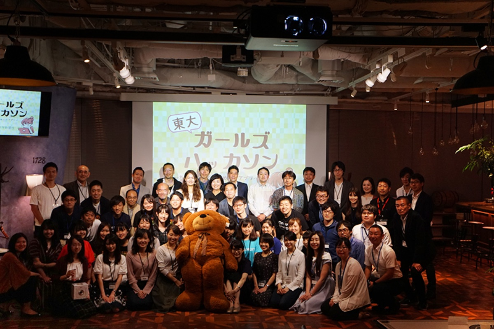
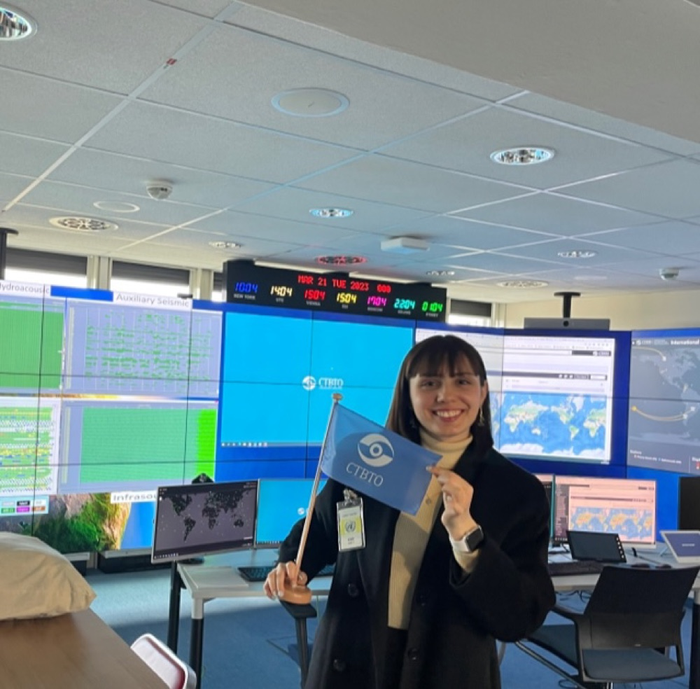

News
Media features and coverage.

Sep 2024
Featured as a career role model on BizReach's YouTube series "Shigoto-Reach."

Jan 2022
Master's research picked up by Japan's leading tech and business media — ITmedia NEWS, NewsPicks, Seamless — plus UTokyo III and EEIC news.

Jan 2019
Profiled as "Campus Girl" in the University of Tokyo's newspaper (Jan 15, 2019 issue) as a role model for women in engineering.

Oct 2018
Won the Grand Prize at the UTokyo Girls Hackathon with an app surfacing diverse career role models for women — covered by the University of Tokyo's newspaper.

Mar 2023
Selected for the Vienna delegation of a next-generation leaders program sponsored by the foundation of former Prime Minister Yukio Hatoyama; visits included the CTBTO. Published activity report.
Apr 2015
My High School Diplomats exchange was featured in Sankei Shimbun, one of Japan's five national daily newspapers.